Explore Almaty
A Brief History
Almaty served as capital of Soviet and independent Kazakhstan until 1997 and remains the country's largest city at the foot of the Trans-Ili Alatau. Tsarist-era wooden villas, Stalinist blocks, and post-Soviet towers line wide streets laid out after earthquakes in the 19th century. Panfilov Park, the Zenkov Cathedral, and mountain resorts record its role as a cultural, financial, and gateway city to the Tian Shan.
Attractions Map
Top Sights & Activities
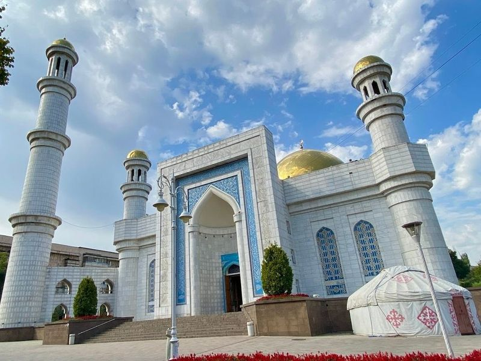
Almaty Central Mosque
Almaty Central Mosque is a example of Islamic architecture, featuring white marble walls, gilded golden domes, and intricate ceramic calligraphy. The mosque's towering minaret offers a commanding presence in the city skyline. It took six years to build and has since been recognized as an architectural monument. The rectangular shape of the mosque follows Timurid architectural traditions and can accommodate around 7,000 people.
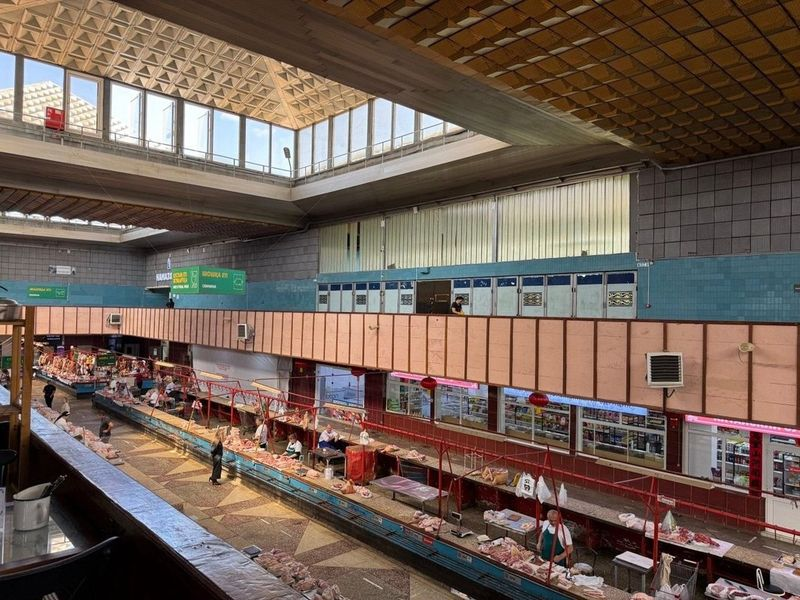
Green Bazaar
The Green Bazaar in Almaty is a bustling indoor market filled with stalls offering a wide variety of goods. Visitors can explore an abundance of fruits, berries, exotic delicacies, sweets, cheeses, meat products, and rare spices. The friendly sellers are eager to offer samples of national delicacies for visitors to try before making a purchase. Additionally, the market features small dining places serving traditional dishes like lagman and plov.
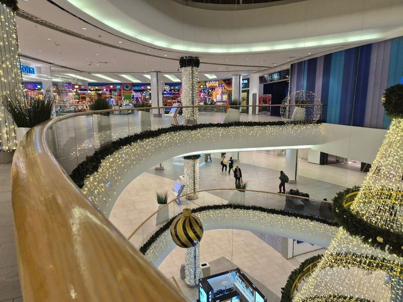
Dostyk Plaza
Dostyk Plaza is a top-tier shopping and entertainment complex located in the heart of Almaty. It offers a modern and spacious environment with an array of upscale boutiques, international fashion brands, and designer stores, making it a haven for fashion enthusiasts. The mall also features a cinema, food court, and various high-end retail options.
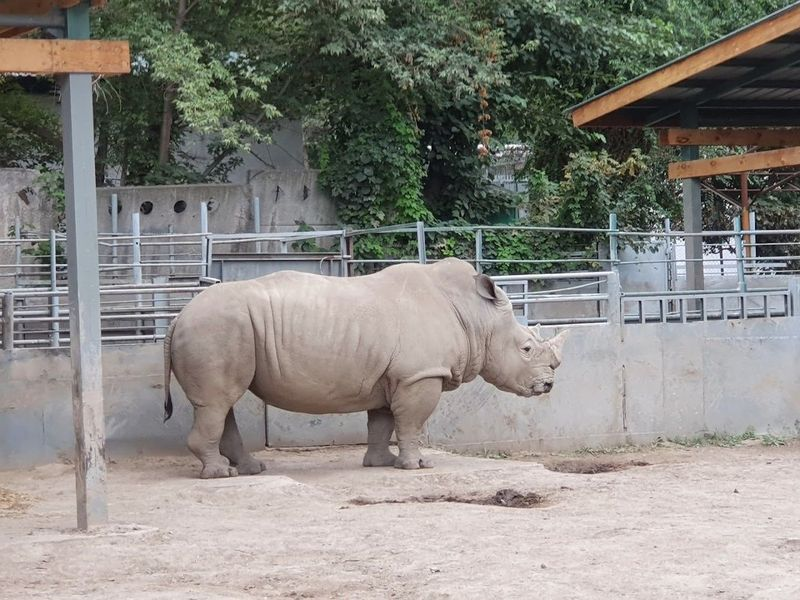
Almaty Zoo
Almaty Zoo, located in the eastern part of Almaty city at the foot of the Alatau Mountains, is and oldest zoological parks in Kazakhstan. Established in 1937, it covers an area of approximately 21 hectares and features a diverse range of mammals, birds, and reptiles showcased in their natural habitats. The zoo has undergone significant expansion over its nearly 100-year history and is home to a multitude of animal species.
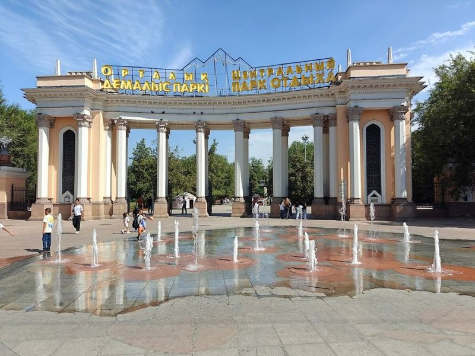
Central Park
Central Park, also known as Gorky Park, is a historic and expansive urban hub located in the bustling city of Almaty. Spanning 42 hectares, it seamlessly blends nature with urban life, offering a variety of attractions and activities for visitors of all ages. The park features lush greenery, aesthetic pathways, vibrant flowers, and artificial water reservoirs. Visitors can enjoy an amusement park, sports facilities, cafes, boat rentals and cultural venues within its boundaries.
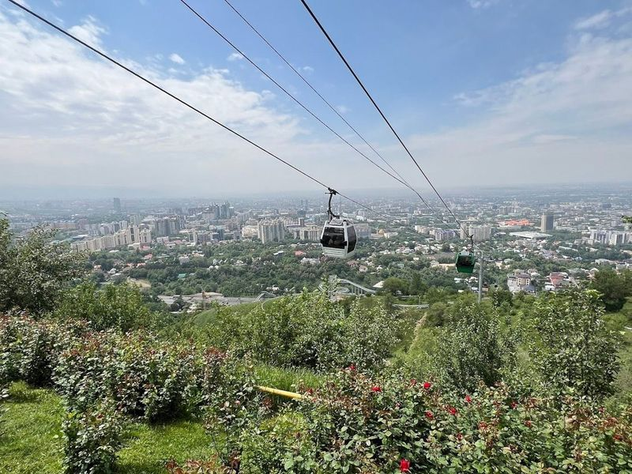
Kok-Tobe Hill
Perched atop Kok Tobe Hill at 1100 meters above sea level, Kok Tobe Park is a must-visit destination in Almaty, Kazakhstan. This popular park attracts both local and international tourists with its array of attractions. From a children's playground and climbing wall to the thrilling Fast Coaster ride, there's something for everyone. Visitors can also explore an art gallery, relax at a tea house, or take in panoramic views of the city and mountains.
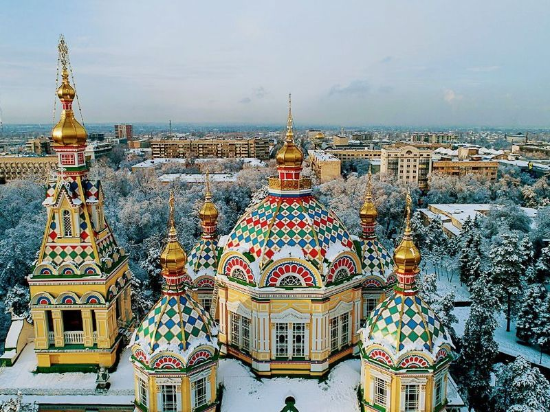
Ascension Cathedral
Ascension Cathedral, also known as the Zenkov Cathedral, is a wooden Ukrainian-baroque Russian Orthodox cathedral consecrated in 1907. This majestic landmark in Almaty showcases striking golden domes and intricate architectural details that reflect Byzantine and Russian styles. Inside, visitors are greeted by candlelight and prayers, making it a cherished place for the local community.
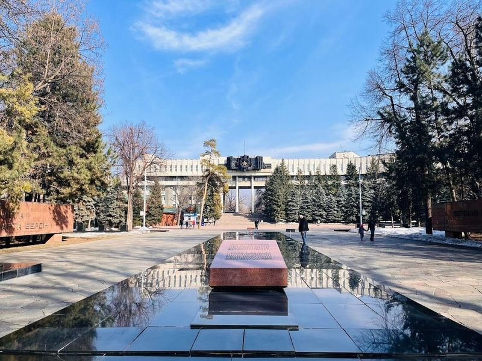
28 Panfilov Guardsmen Park
The Park of 28 Panfilov Guardsmen, situated in the heart of Almaty, is a 44-acre urban park that pays tribute to the heroic Panfilov soldiers who fought during WWII. The park features striking war memorials and an 'eternal flame' honoring their sacrifice. Adjacent to the park stands the visually captivating Ascension Cathedral, a Tsarist-era wooden structure claimed to be one of the tallest in the world.
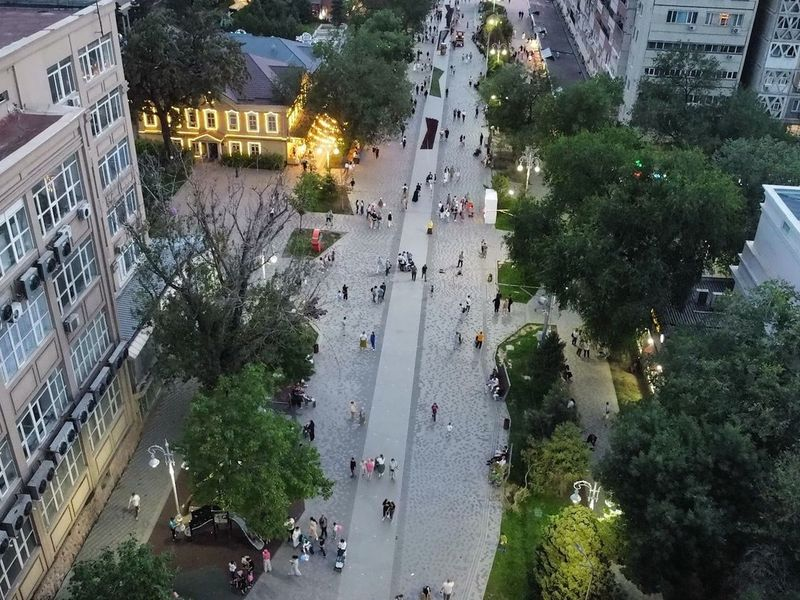
Arbat Almaty
Arbat G. Almaty, also known as Zhibek Zholy pedestrian street, is a must-visit destination in the heart of Almaty, Kazakhstan. This vibrant thoroughfare is alive with energy and creativity, showcasing an array of street artists and musicians that bring the area to life. As you stroll along Arbat, encounter a delightful mix of souvenir shops and cozy cafes where savor local delicacies.
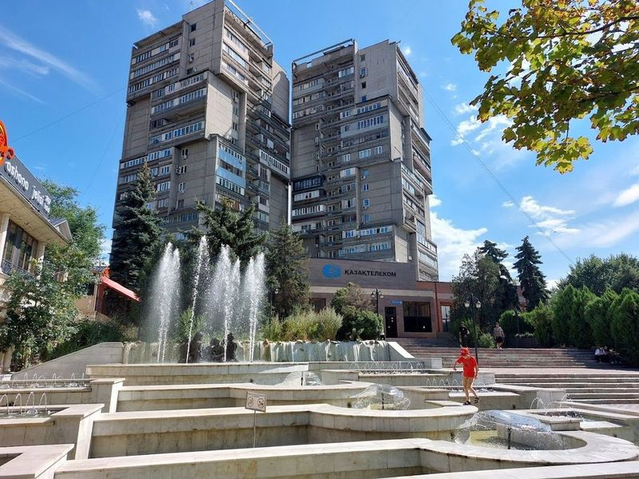
Arbat
Arbat is a popular treelined pedestrian shopping street in Almaty, known for its nice atmosphere with cafes, street musicians, and artists selling their paintings. The historical promenade lane has been extended by the local municipality up to the opera house, creating a well-lit and nicely decorated area that is pedestrian-friendly. It also offers areas for fitness activities for both adults and children, as well as a growing selection of cafes and restaurants.
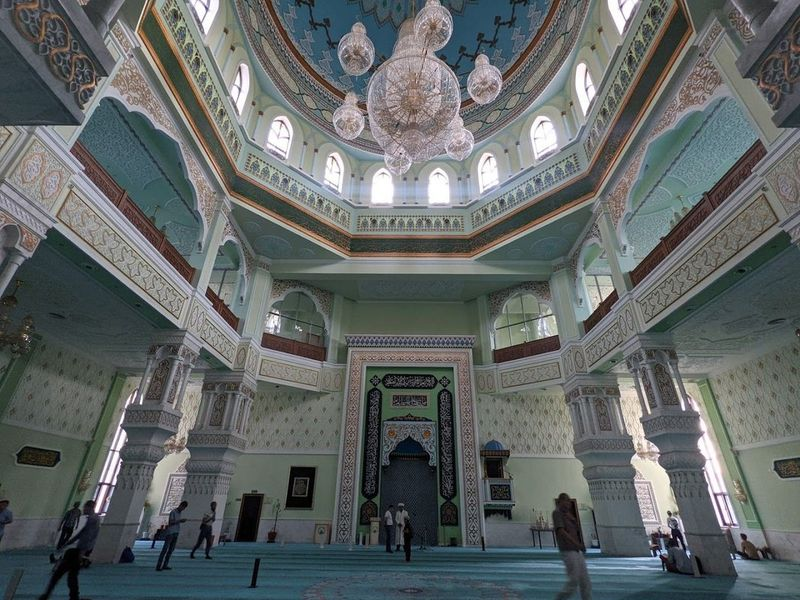
Baiken
In the city of Almaty, visitors can find the Baiken Mosque, a remarkable architectural gem inaugurated in 2014 at the behest of Kazakhstan's President Nursultan Nazarbayev. The mosque's design seamlessly blends traditional Islamic elements with modern touches, creating a truly captivating sight. Stepping inside reveals a spacious and serene environment that fosters tranquility and reflection. Maintained with great care, the mosque offers a pristine setting for prayer and contemplation.
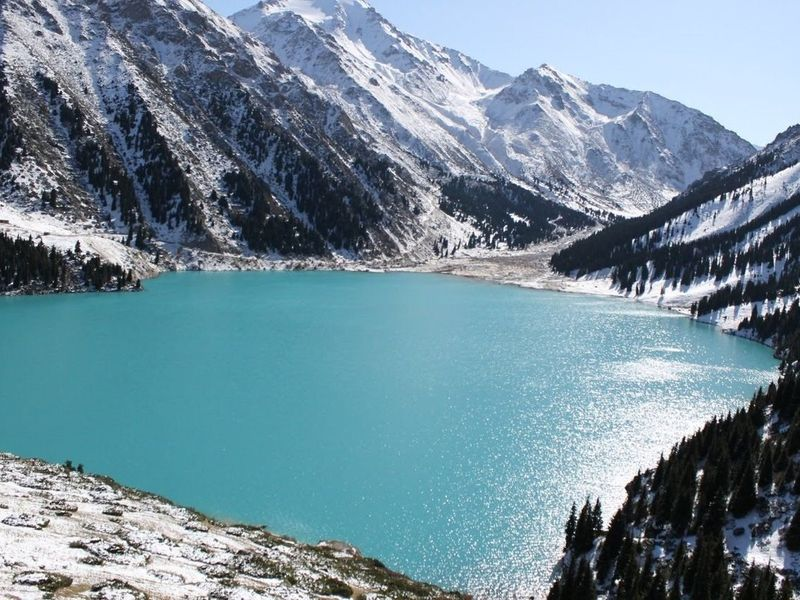
Ile-Alatau National Park
Nestled in the heart of Kazakhstan, Ile-Alatau National Park is a expanse that was established in 1996 and spans an impressive 200,000 hectares. This natural wonder showcases a array of landscapes, from lush alpine meadows to majestic glaciers and serene lakes. One of its crown jewels is the Big Almaty Lake, perched at over 2,500 meters above sea level and surrounded by the striking peaks of the Tien Shan Mountains.
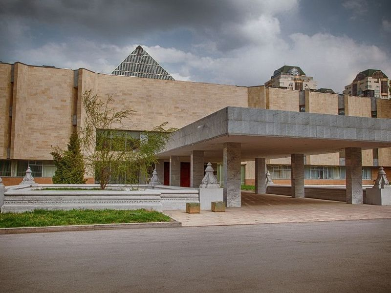
Abilkhan Kasteev State Art Museum
The Abilkhan Kasteev State Art Museum, established in 1976, is a significant cultural center in Asia. It features an extensive collection of over 23,000 artworks spanning from the 16th century to contemporary pieces. The museum showcases a diverse range of artistic treasures representing the heritage of Kazakhstan, Russia, and Western Europe.
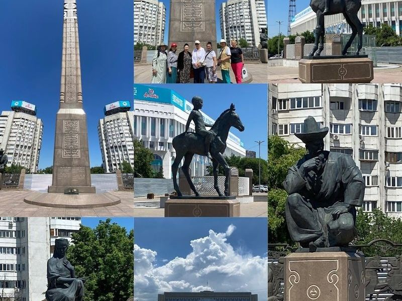
Independence Monument (Golden Warrior Monument)
Independence Monument in Kazakhstan is a striking obelisk that pays tribute to the country's independence. At its pinnacle stands a majestic golden warrior mounted on a winged leopard. To reach this landmark, take the metro from Zhibek Zholy to Abay and then explore the area. There are numerous dining options nearby, including Coffee Inn which offers a variety of traditional Kazakh and Western dishes.
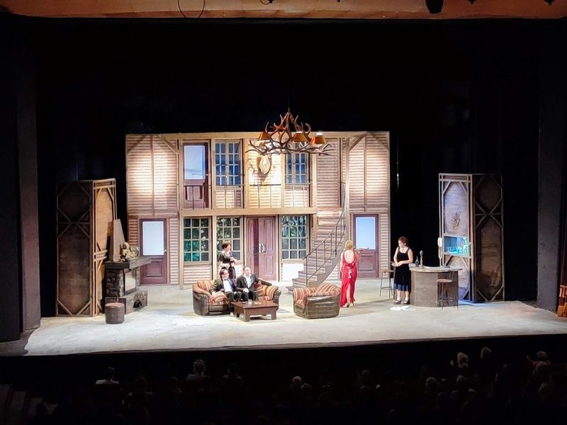
M. Lermontov State Academic Russian Drama Theather
The M. Lermontov State Academic Russian Drama Theater offers a cozy and warm atmosphere with comfortable seating and excellent acoustics. The theater provides a picturesque setting with illuminated fountains at night, creating a charming ambiance. Despite the outdated theater chairs, the performances are generally pleasing, allowing visitors to immerse themselves in the theatrical experience and forget about the outside world.
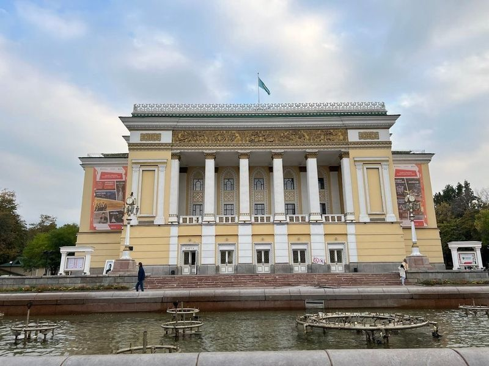
Abay Kazakh State Academic Opera and Ballet Theater
The Abay Kazakh State Academic Opera and Ballet Theater, located in the former capital of Almaty, is celebrating its 90th season. The grand opera house boasts interior and exterior designs. It offers a diverse repertoire featuring international classics like Swan Lake, The Nutcracker, Aida, Madam Butterfly, and Carmen alongside works by Kazakh composers. This architectural gem showcases a blend of Stalinist Empire style with Italian classicism and Kazakh elements.
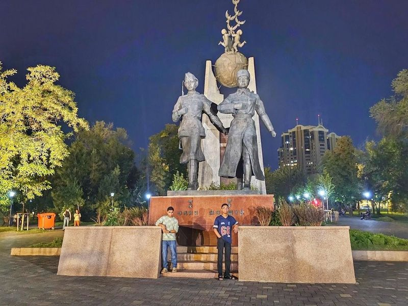
Memorial of Aliya Moldagulova and Manshuk Mametova
The Memorial of Aliya Moldagulova and Manshuk Mametova, located on Astana Square, is a historical attraction that honors two brave Kazakh women who were heroes during World War II. The park surrounding the monument offers a relaxing atmosphere and features beautiful tulips, making it an excellent place for family outings and leisure activities. These two women are celebrated as heroes from WW2, with one of them being recognized as the sniper of the Soviet Union during that time.
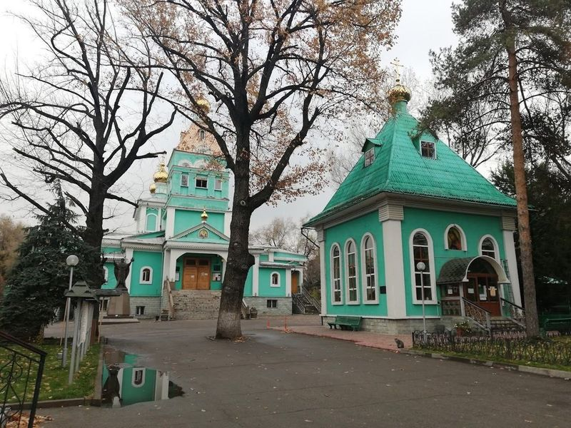
St Nicholas Cathedral
St Nicholas Cathedral is a famous attraction in downtown Almaty, known for its otherworldly painted walls, ceiling, and icons. Visitors are recommended to take a peek inside the orthodox edifice and admire its historical value. The cathedral is located in a majestic park and offers a beautiful setting for exploration.
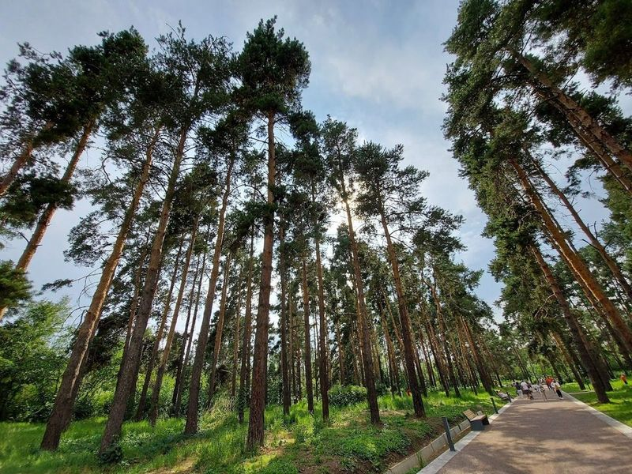
Almaty Botanical Gardens
The Almaty Botanical Garden, established in 1932, spans over a hundred hectares and features diverse thematic areas such as Japanese-style Zen Garden, wooded areas, rose gardens, and wide flower beds. Visitors can stroll along tree-lined pathways and encounter exotic plants from around the world including those from Russia, East Asia, the Caucasus and North America. The park also houses a Solarium for trees and cactuses that require warm conditions.
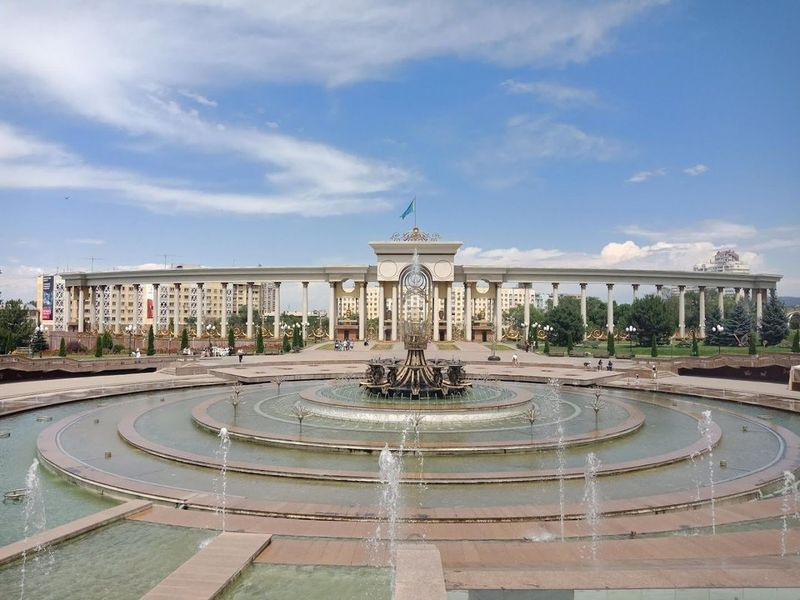
First President park
First President Park is a urban oasis in Almaty, dedicated to the legacy of Kazakhstan's first president, Nursultan Nazarbayev. Opened to the public in November 2011, this expansive park spans 73 hectares and is nestled at the intersection of Navoi Street and Al-Farabi Avenue in the Bostandyk district. With its mountain backdrop, it has quickly become a beloved spot for both locals and visitors alike.
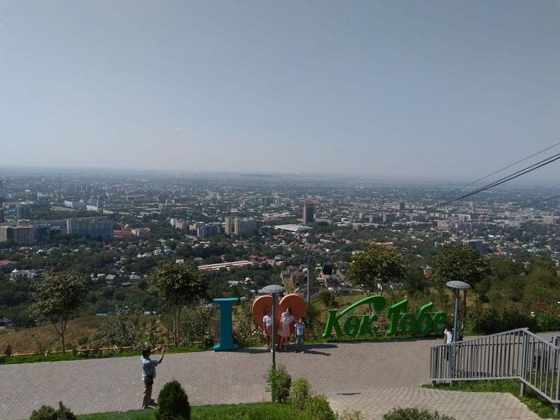
Kok Tobe
Kok Tobe is a famous mountain in Almaty, offering city views and a variety of attractions. Visitors can take a cable car from the station on Dostyk Avenue to reach the park at an elevation of 1,620 meters. The ride provides panoramic views of the city's skyline and natural landscapes. At the top, visitors can enjoy an amusement park with various rides and activities.